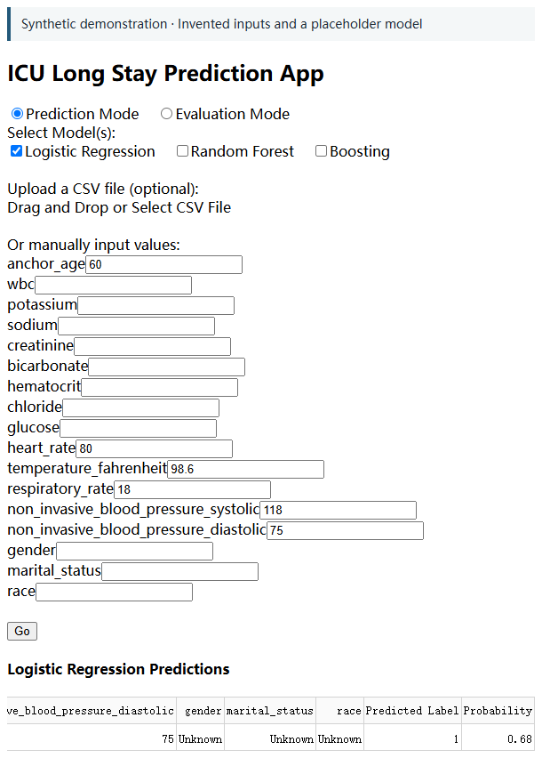
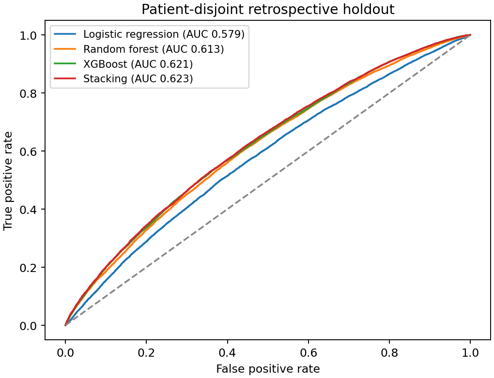

Question
Could demographics, lab measurements and recorded vital signs distinguish ICU stays lasting at least two days from shorter stays? I studied this as a retrospective classification problem using completed ICU stays.
Dataset and cohort
MIMIC-IV is a credentialed database of deidentified hospital and intensive care records. An ICU stay is one episode of intensive care. A patient can have more than one stay, so a cohort of stays can include fewer distinct patients.
In Python, I used BigQuery to extract MIMIC-IV 3.1 tables and joined stays to admissions and patient demographics. I kept adults using the dataset's anchor age, then added lab measurements and vital signs. Labs were the latest values stored before ICU entry for each patient and lab item. Vitals were the first values stored within a stay for each vital sign. The result was 94,444 stays labeled by whether the stay lasted at least two days.
From records to a model
- Build the cohort. Join the clinical tables, apply cohort criteria and create one record per ICU stay.
- Prepare features. In the original Python pipelines, I filled missing numeric values with training means and missing categories with the most common category. I represented categories as indicator columns so models could use them.
- Fit and evaluate. I used the training data to tune models, then checked how the selected models performed on held-out stays.
Original work in R and Python
I worked on the same ICU length of stay question in R and Python. In both versions, I prepared the data and preprocessed the inputs, fit logistic regression, random forest and boosting models, and evaluated their performance.
The R version also included stacking and Shiny. Stacking trains a second model to combine the predictions of several base models. The Python version used BigQuery to construct the cohort and included XGBoost and Dash. The public repository preserves the Python implementation.
Interactive applications
R Shiny. I built a Shiny application as part of the R implementation.
Python Dash. I built an interface that let users choose logistic regression, random forest or XGBoost and switch between two workflows:
- Prediction. Enter feature values or load a CSV to see the models' predicted classes and probabilities.
- Evaluation. Load a labeled Parquet file to see accuracy, ROC curves, classification reports and confusion matrices for the selected models.
The archived Dash source shows both workflows. Running it with the coursework models requires local model artifacts.


For these implementations, I found the Python code more concise and model fitting faster in my setup.
Original Python evaluation
I tuned the models with cross-validation inside the training set and evaluated them on 47,222 held-out stays. The split was by stay and preserved the proportion of long stays. ROC-AUC measures how well a model ranks longer stays above shorter ones. A score of 0.5 is chance-level ranking.
| Model | ROC-AUC | Accuracy |
|---|---|---|
| Logistic regression | 0.570 | 0.553 |
| Random forest | 0.624 | 0.587 |
| XGBoost | 0.629 | 0.590 |
XGBoost had the highest test ROC-AUC in the saved coursework run. The original notebook also includes tuning plots and code for per-class performance summaries.
September 2026 portfolio revision
Expanded to four models in November 2026.
The original split placed 10,058 patients in both sets. I kept each patient's stays together in the revision, with zero patient overlap. For the four-model run, I excluded marital status because the archived cohort grouped it using frequencies from the full dataset. I fitted the remaining preprocessing on training data only.
To train the stack, I divided the training patients into five groups. For each group, I trained the three base models on the other four groups and used them to score the group they had never seen. A logistic regression combined those predictions. I then refitted the base models on all training patients and evaluated all four models on the same held-out cohort from the September revision.
| Model | ROC-AUC | Accuracy | Precision | Recall | F1 |
|---|---|---|---|---|---|
| Logistic regression | 0.579 | 0.558 | 0.559 | 0.472 | 0.512 |
| Random forest | 0.613 | 0.580 | 0.579 | 0.534 | 0.556 |
| XGBoost | 0.621 | 0.586 | 0.587 | 0.531 | 0.558 |
| Stacking | 0.623 | 0.586 | 0.585 | 0.542 | 0.563 |
Stacking had the highest ROC-AUC (0.623) on this test set.
The revised test set contains 47,151 stays from 32,678 patients. The two tables use different fits and test sets, so the difference between their scores cannot isolate the effect of patient overlap.

What the results can support
These are retrospective results. The first recorded vital sign can occur at any point in the stay. The lab query has no fixed lookback and can pull a value recorded for a prior admission. An admission-time application would need a defined cutoff and a new evaluation. This project used no external or time-based validation.